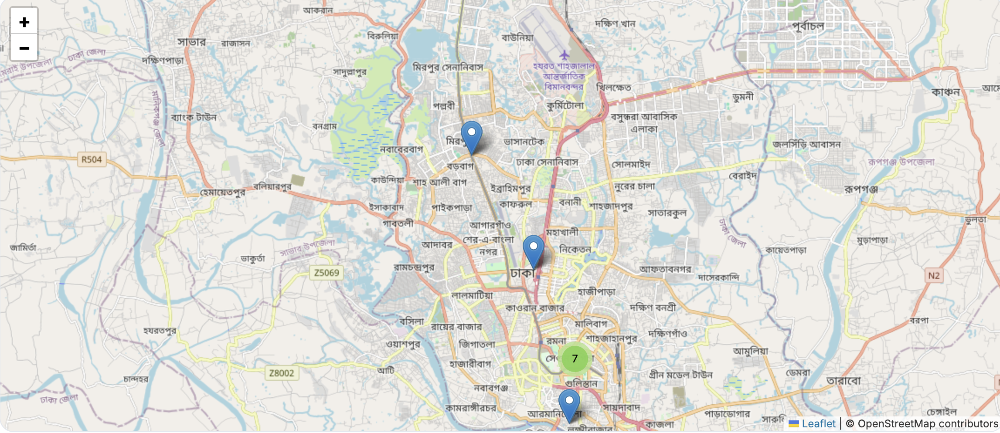

Visualize incidents on an interactive map with clustering and detailed pop-ups for each event.
Real-Time Statistics
Access up-to-date statistics on total incidents, casualties, and unique locations.
Advanced Filters
Filter incidents by political party, location, and casualty count for targeted analysis.
About the Tracker
The Political Violence Incident Tracker is a cutting-edge tool designed to monitor and analyze political violence incidents in real time. Our mission is to provide accurate, accessible, and actionable insights for researchers, journalists, and policymakers.
Built with advanced data crawling and visualization technologies, the tracker offers a user-friendly interface to explore incidents, view detailed statistics, and apply custom filters to focus on specific events or trends.

Start Exploring Today
Join thousands of users who rely on the Political Violence Incident Tracker to stay informed and make data-driven decisions.